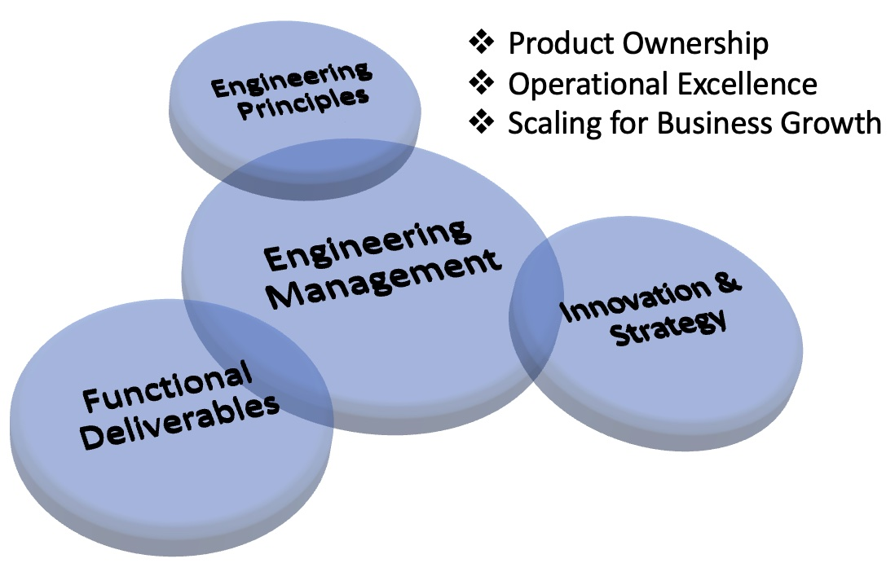
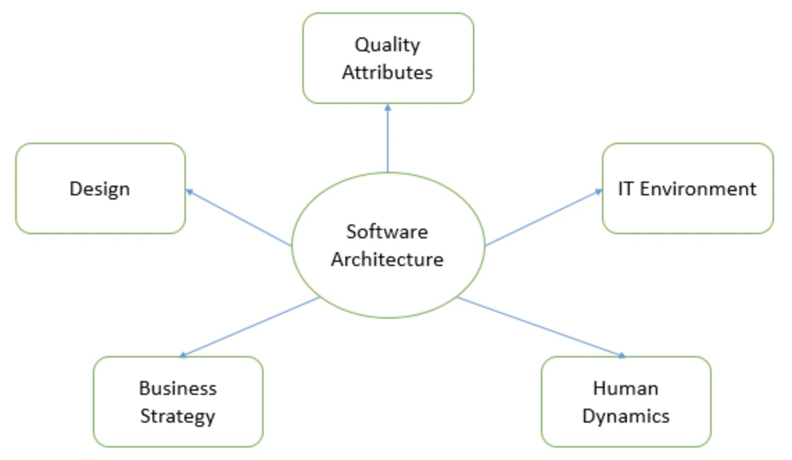
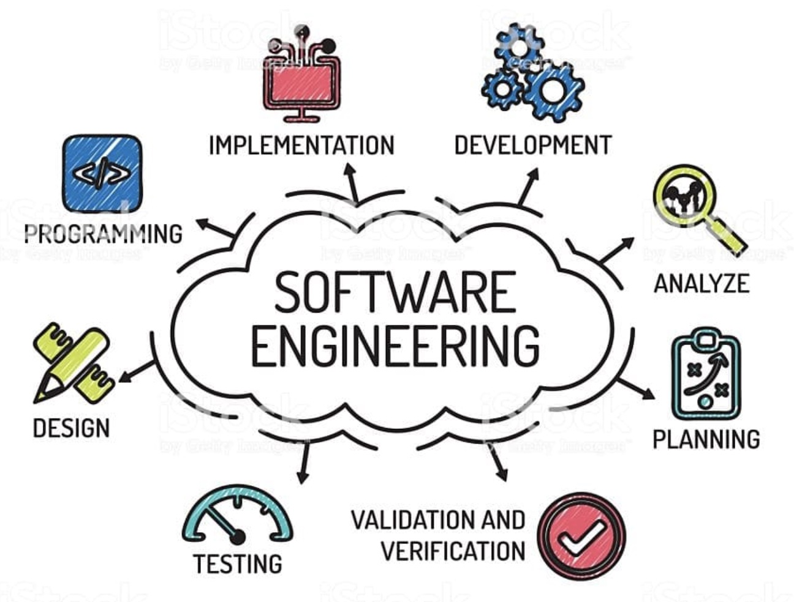

It takes Engineering, Product, Program and Business working together to deliver to Customer needs and Organization Strategies.

Engineering Management at Highmark : 2015 - Present
- Full Product ownership of Customer Account Management, Billing and Invoicing applications
- Adapted & practiced the culture of data driven decision making process using health metrics (opex)
dashboards to improve developer productivity/efficiency
- Focus on setting clear expectations, providing right tools and stable Environments to test have
enabled Engineers to produce high quality deliverables
- Built High Performance teams by engaging and empowering the team members
- Health care regulations like HIPAA to protect customer data (PHI, PII & PCI) lead us to innovate new
design principles to mask/encrypt sensitive data without impacting the performance of the applications
- Exponential growth in Customer base initiated multiple technology modernization activities across
the platforms including re-architecture of Applications and Cloud Migration

Software/Application Architect at Highmark : 2007 - 2015
- Focus on providing efficient and scalable solutions for core capabilities
- Help prioritize non-functional requirements into engineering roadmap
- Help analyze build vs buy options
- Focus on E2E flows and challenge hacking solutions developed in silos
- Help build a consistent Performance Testing pattern across all Applications
- Document detailed Architecture diagrams into KML (Knowledge Management Library like Wiki or Confluence)
- Key engineer in a mutli-year legacy modernization initiative - deprecating features from Mainframes, IMS DB for different Applications.

Engineering at Highmark : 1998 - 2007
- Software development in Mainframe, CICS, Cobol, and Java for many applications
- Gained expertise in MQ Series, IBM Websphere, Teradata Databases, and suite of IBM Rational tools
- Enjoyed building POCs using new technologies
- Gained experience in developing large scale distributed systems on multiple platforms